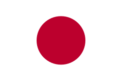

Prazer, me chamo Mauricio. Tenho 20 anos e moro em uma cidade do interior do Rio Grande do Sul chamada Guaíba.
Curso Análise e Desenvolvimento de Sistemas, falo português, inglês, alemão e japonês.
Sou apaixonado por carros e motos, tenho o sonho de morar no exterior e adoro aprender novos idiomas!
Esses são meus principais hobbies e atividades favoritas do dia a dia:

Estes são alguns dos muitos países que desejo visitar um dia:
| Nome | Bandeira |
|---|---|
| Japão |  |
| Austria | |
| Alemanha |
Aqui vai uma recomendação pessoal de Site para quem ama idiomas e tem interesse na língua japonesa:
"Jisho.org", um dicionário online de Japonês-Inglês muito útil e completo para aprender Kanji, Gramática, Verbos e muito mais.